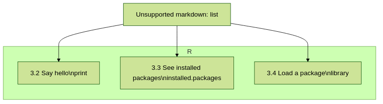

Load and run R
find the module to be able to run R
load the module to be able to run R
run the R interpreter
run the R command to get the list of installed R packages
run an R script from the command-line
Teaching goals are:
Learners have found the module to be able to run R
Learners have loaded the module to be able to run R
Learners have run the R interpreter
Learners have run the R command to get the list of installed R packages
Learners have run an R script from the command-line
Learners have been able to use the exercise files
Lesson plan (25 minutes in total):
- 5 mins: prior knowledge
You want to write and run R code on an HPC cluster. Which ways do you know?
How to start R on an HPC cluster?
What is a module system?
Why is there a module system?
- 5 mins: presentation: loading and running R
skip R packages, that is next session
10 mins: challenge
5 mins: feedback
Introduction
![flowchart TD
find_r_module[1. Find an R module\nmodule spider]
load_r_module[2. Load an R module\nmodule load]
use_r_interpreter[3. Use the R interpreter\nR]
start_r_interpreter[3.1 Start the R interpreter\nR]
subgraph R
say_hello[3.2 Say hello\nprint]
see_installed_packages[3.3 See installed packages\ninstalled.packages]
load_package[3.4 Load a package\nlibrary]
end
stop_r_interpreter[3.5 Stop the R interpreter\nquit]
run_r_script[4. Run an R script\nRscript]
find_r_module --> |needed for| load_r_module
load_r_module --> |allows for| use_r_interpreter
load_r_module --> |allows for| run_r_script
use_r_interpreter --> start_r_interpreter
use_r_interpreter --> say_hello
use_r_interpreter --> see_installed_packages
use_r_interpreter --> load_package
use_r_interpreter --> stop_r_interpreter
run_r_script --> say_hello
run_r_script --> see_installed_packages
run_r_script --> load_package](../_images/mermaid-5c3d67ff84e7a8e750e6009c3ee92b09fd592157.png)
To allow us to work with R on an HPC cluster, we will:
find the module to be able to run R, so we know which versions of R we can pick from
load the module to be able to run R, so we can actually run R
run the R interpreter, so we can test/develop R code
run an R script from the command-line, so we can run R code
In this session, we will follow this typical user journey.
1. Find an R module
To be able to work with R on an HPC cluster, we will need to find a module that loads a specific version of R.
HPC2N, UPPMAX, LUNARC, and most of the Swedish HPC centres use the same module system:
HPC2N, LUNARC, and UPPMAX do differ how their module systems show results when searching for a module with ml avail:
HPC2N: a module is hidden from search until a prerequisite module is loaded
UPPMAX: when searching for a module, one can always see all modules
LUNARC: a module is hidden from search until a prerequisite module is loaded
All modules can be found with module spider though.
Here is how to find the modules that load different versions of R:
From a terminal, do:
module spider R
How does the output look like ?
The output will look similar to this output (run at UPPMAX on October 15 2023):
[bbrydsoe@rackham3 bbrydsoe]$ module spider R
----------------------------------------------------------------------------
R:
----------------------------------------------------------------------------
Versions:
R/3.0.2
R/3.2.3
R/3.3.2
R/3.4.0
R/3.4.3
R/3.5.0
R/3.5.2
R/3.6.0
R/3.6.1
R/4.0.0
R/4.0.4
R/4.1.1
R/4.2.1
R/4.3.1
Other possible modules matches:
454-dataprocessing ADMIXTURE ANTLR ARCS ARC_assembler ARPACK-NG ..
.
----------------------------------------------------------------------------
To find other possible module matches execute:
$ module -r spider '.*R.*'
----------------------------------------------------------------------------
For detailed information about a specific "R" package (including how to load the modules) use the module's full name.
Note that names that have a trailing (E) are extensions provided by other modules.
For example:
$ module spider R/4.2.1
----------------------------------------------------------------------------
From a terminal, do:
module spider R
How does the output look like?
Output at HPC2N as of 15 October 2023 (on main Kebnekaise login node):
b-an01 [~]$ module spider R
-----------------------------------------------------------------------------------------------------------------------------------------------
R:
-----------------------------------------------------------------------------------------------------------------------------------------------
Description:
R is a free software environment for statistical computing and graphics.
Versions:
R/4.0.0
R/4.0.4
R/4.1.0
R/4.1.2
R/4.1.3
Other possible modules matches:
AMPtorch Amber Armadillo Arrow Bader BerkeleyGW BioPerl ...
-----------------------------------------------------------------------------------------------------------------------------------------------
To find other possible module matches execute:
$ module -r spider '.*R.*'
-----------------------------------------------------------------------------------------------------------------------------------------------
For detailed information about a specific "R" package (including how to load the modules) use the module's full name.
Note that names that have a trailing (E) are extensions provided by other modules.
For example:
$ module spider R/4.1.3
-----------------------------------------------------------------------------------------------------------------------------------------------
From a terminal, do:
module spider R
How does the output look like?
Output at LUNARC as of 10 October 2024:
[bbrydsoe@cosmos3 python]$ ml spider R
------------------------------------------------------------------------------------------
R:
------------------------------------------------------------------------------------------
Description:
R is a free software environment for statistical computing and graphics.
Versions:
R/4.2.1
R/4.3.2
R/4.4.1
Other possible modules matches:
ANTLR APR APR-util Amber AmberTools Archive-Zip Armadillo Arrow BioPerl ...
------------------------------------------------------------------------------------------
To find other possible module matches execute:
$ module -r spider '.*R.*'
------------------------------------------------------------------------------------------
For detailed information about a specific "R" package (including how to load the modules) use the module's full name.
Note that names that have a trailing (E) are extensions provided by other modules.
For example:
$ module spider R/4.4.1
------------------------------------------------------------------------------------------
Here is how to find out how to load an R module of a specific version:
To see how to load a specific version of R, including the prerequisites, do
module spider R/<version>
where <version> is an R version, in major.minor.patch format,
for example, module spider R/4.1.1.
How does the output look like?
Your output will look similar to this:
[bbrydsoe@rackham3 bbrydsoe]$ module load spider R/4.1.1
----------------------------------------------------------------------------
R: R/4.1.1
----------------------------------------------------------------------------
This module can be loaded directly: module load R/4.1.1
Help:
R - use R Version 4.1.1
https://www.r-project.org
Many, many R and Bioconductor packages are available in the module
'R_packages/4.1.2'
To see how to load a specific version of R, including the prerequisites, do
module spider R/<version>
where <version> is an R version, in major.minor.patch format,
for example, module spider R/4.1.2.
How does the output look like ?
Your output will look similar to this:
b-an01 [~]$ module spider R/4.1.2
----------------------------------------------------------------------------
R: R/4.1.2
----------------------------------------------------------------------------
Description:
R is a free software environment for statistical computing and
graphics.
You will need to load all module(s) on any one of the lines below before
the "R/4.1.2" module is available to load.
GCC/10.2.0 CUDA/11.1.1 OpenMPI/4.0.5
GCC/10.2.0 OpenMPI/4.0.5
This module provides the following extensions:
abc.data/1.0 (E), abc/2.1 (E), abe/3.0.1 (E), abind/1.4-5 (E), acepack/1.4.1 (E),
adabag/4.2 (E), ade4/1.7-16 (E), ADGofTest/0.3 (E), aggregation/1.0.1 (E),
AICcmodavg/2.3-1 (E), akima/0.6-2.1 (E), AlgDesign/1.2.0 (E), AnalyzeFMRI/1.1-23 (E),
animation/2.6 (E), aod/1.3.1 (E), ape/5.4-1 (E), argparse/2.0.3 (E), arm/1.11-2 (E),
askpass/1.1 (E), asnipe/1.1.15 (E), assertive.base/0.0-9 (E), assertive.code/0.0-3 (E),
assertive.data.uk/0.0-2 (E), assertive.data.us/0.0-2 (E), assertive.data/0.0-3 (E),
assertive.datetimes/0.0-3 (E), assertive.files/0.0-2 (E), assertive.matrices/0.0-2 (E),
assertive.models/0.0-2 (E), assertive.numbers/0.0-2 (E), assertive.properties/0.0-4 (E),
assertive.reflection/0.0-5 (E), assertive.sets/0.0-3 (E), assertive.strings/0.0-3 (E),
assertive.types/0.0-3 (E), assertive/0.3-6 (E), assertthat/0.2.1 (E), AUC/0.3.0 (E),
To see how to load a specific version of R, including the prerequisites, do
module spider R/<version>
where <version> is an R version, in major.minor.patch format, for example, module spider R/4.2.1.
How does the output look like ?
Your output will look similar to this:
[bbrydsoe@cosmos3 python]$ module spider R/4.2.1
------------------------------------------------------------------------------------------
R: R/4.2.1
------------------------------------------------------------------------------------------
Description:
R is a free software environment for statistical computing and graphics.
You will need to load all module(s) on any one of the lines below before the "R/4.2.1" module is available to load.
GCC/11.3.0 OpenMPI/4.1.4
Help:
Description
===========
R is a free software environment for statistical computing and graphics.
More information
================
- Homepage: https://www.r-project.org/
Included extensions
===================
abc-2.2.1, abc.data-1.0, abe-3.0.1, abind-1.4-5, acepack-1.4.1, adabag-4.2,
ade4-1.7-19, ADGofTest-0.3, admisc-0.29, aggregation-1.0.1, AICcmodavg-2.3-1,
akima-0.6-3.4, alabama-2022.4-1, AlgDesign-1.2.1, alluvial-0.1-2,
AMAPVox-0.12.0, animation-2.7, aod-1.3.2, apcluster-1.4.10, ape-5.6-2,
aplot-0.1.9, argparse-2.1.5, aricode-1.0.2, arm-1.12-2, askpass-1.1,
asnipe-1.1.16, assertive-0.3-6, assertive.base-0.0-9, assertive.code-0.0-3,
assertive.data-0.0-3, assertive.data.uk-0.0-2, assertive.data.us-0.0-2,
assertive.datetimes-0.0-3, assertive.files-0.0-2, assertive.matrices-0.0-2,
...
2. Load an R module
When you have a found a modules to load your favorite version of R, here is how you load that module:
To load an R module of a specific version, do:
module load R/<version>
where <version> is an R version, in major.minor.patch format,
for example, module load R/4.1.1
After having done module spider R/4.1.2,
you will get a list of which other modules needs to be loaded first,
resulting in:
module load GCC/10.2.0 OpenMPI/4.0.5 R/<version>
where <version> is an R version, in major.minor.patch format,
for example, module load GCC/11.2.0 OpenMPI/4.1.1 R/4.1.2
If you care about reproducibility of your programming environments and R scripts, you should always load a specific version of a module.
3. Use the R interpreter
![flowchart TD
use_r_interpreter[3. Use the R interpreter\nR]
start_r_interpreter[3.1 Start the R interpreter\nR]
subgraph R
say_hello[3.2 Say hello\nprint]
see_installed_packages[3.3 See installed packages\ninstalled.packages]
load_package[3.4 Load a package\nlibrary]
end
stop_r_interpreter[3.5 Stop the R interpreter\nquit]
use_r_interpreter --> start_r_interpreter
use_r_interpreter --> say_hello
use_r_interpreter --> see_installed_packages
use_r_interpreter --> load_package
use_r_interpreter --> stop_r_interpreter](../_images/mermaid-fa40bca759a84ffd8f9922ff811fb1dd7763a62e.png)
Now you have loaded a module for a specific version of R, from the terminal, we can use the R interpreter.
Here we show:
how to start the interpreter
how to do a trivial R thing
how to see the list of installed R packages
how to load an R package
how to quit the interpreter
3.1. Start the R interpreter
Now you have loaded a module for a specific version of R, from the terminal, we can start the R interpreter like this:
R
How does the output look like ?
It will look similar to this:
R version 4.0.4 (2021-02-15) -- "Lost Library Book"
Copyright (C) 2021 The R Foundation for Statistical Computing
Platform: x86_64-pc-linux-gnu (64-bit)
R is free software and comes with ABSOLUTELY NO WARRANTY.
You are welcome to redistribute it under certain conditions.
Type 'license()' or 'licence()' for distribution details.
Natural language support but running in an English locale
R is a collaborative project with many contributors.
Type 'contributors()' for more information and
'citation()' on how to cite R or R packages in publications.
Type 'demo()' for some demos, 'help()' for on-line help, or
'help.start()' for an HTML browser interface to help.
Type 'q()' to quit R.
>
3.2 how to do a trivial R thing
Warning
Only do lightweight things!
We are still on the login node, which is shared with many other users. This means, that if we do heavy calculations, all these other users are affected.
If you need to do heavy calculations:
Submit that calculation as a batch job
UPPMAX only: use an interactive session
This will be shown in the course in a later session
Within the R interpreter we can give R commands:
print("Hello world")
Which will give the output:
[1] "Hello world"
3.3. how to see the list of installed R packages
From within the R interpreter, we can check which packages are installed using:
installed.packages()
How does the output look like ?
Output will look similar to this:
Package LibPath base "base" "/sw/apps/R/x86_64/4.0.4/rackham/lib64/R/library" boot "boot" "/sw/apps/R/x86_64/4.0.4/rackham/lib64/R/library" class "class" "/sw/apps/R/x86_64/4.0.4/rackham/lib64/R/library" cluster "cluster" "/sw/apps/R/x86_64/4.0.4/rackham/lib64/R/library" codetools "codetools" "/sw/apps/R/x86_64/4.0.4/rackham/lib64/R/library" compiler "compiler" "/sw/apps/R/x86_64/4.0.4/rackham/lib64/R/library" datasets "datasets" "/sw/apps/R/x86_64/4.0.4/rackham/lib64/R/library" foreign "foreign" "/sw/apps/R/x86_64/4.0.4/rackham/lib64/R/library" graphics "graphics" "/sw/apps/R/x86_64/4.0.4/rackham/lib64/R/library" grDevices "grDevices" "/sw/apps/R/x86_64/4.0.4/rackham/lib64/R/library" grid "grid" "/sw/apps/R/x86_64/4.0.4/rackham/lib64/R/library" KernSmooth "KernSmooth" "/sw/apps/R/x86_64/4.0.4/rackham/lib64/R/library" lattice "lattice" "/sw/apps/R/x86_64/4.0.4/rackham/lib64/R/library" MASS "MASS" "/sw/apps/R/x86_64/4.0.4/rackham/lib64/R/library" Matrix "Matrix" "/sw/apps/R/x86_64/4.0.4/rackham/lib64/R/library" ...
3.4. how to load an R package
From within the R interpreter, we can load a package like:
library(ggplot2)
3.5. how to quit the interpreter
To quit the R interpreter, use the quit function:
quit()
You will get the question:
Save workspace image? [y/n/c]:
where you type n until you know what that is :-)
4. Run an R script
Now you have loaded a module for a specific version of R, from the terminal, we can run an R script like this:
Rscript <r_script_name>
where <r_script_name> is the path to an R script,
for example Rscript hello.R.
Warning
Only do lightweight things!
We are still on the login node, which is shared with many other users. This means, that if we do heavy calculations, all these other users are affected.
If you need to do heavy calculations:
Submit that calculation as a batch job
UPPMAX only: use an interactive session
This will be shown in the course in a later session
Exercises
Exercise 1: find an R module
Note
Learning objectives
find the module to be able to run R
Use the module system to find which versions of R are provided by your cluster’s module system.
From a terminal, do:
module spider R
You will see a list of modules that provide for different versions of R.
From a terminal, do:
module spider R
You will see a list of modules that provide for different versions of R.
Exercise 2: load an R module
Note
Learning objectives
load the module to be able to run R
For this course, we recommend these versions of R:
HPC2N: R version 4.1.2
UPPMAX: R version 4.1.1
Load the module for the R version recommended to use in this course:
HPC2N: R version 4.1.2
UPPMAX: R version 4.1.1
module load R/4.1.1
module load GCC/11.2.0 OpenMPI/4.1.1 R/4.1.2
Exercise 3: use the R interpreter
Note
Learning objectives
run the R interpreter
run the R command to get the list of installed R packages
Here we - start the R interpreter - find out which packages are already installed - load an R package
Exercise 3.1: start the R interpreter
Start the R interpreter.
R
R
Exercise 3.2: check which packages are installed
From within the R interpreter, check which packages are installed.
installed.packages()
installed.packages()
Exercise 3.3: load a package
From within the R interpreter, load the parallel package.
library(parallel)
library(parallel)
Exercise 4: run an R script
Note
Learning objectives
run an R script from the command-line
In this exercise, we will run an example script.
Exercise 4.1: get an R script
Get the R script hello.R in any way.
Download the script directly using wget
wget https://raw.githubusercontent.com/UPPMAX/R-python-julia-HPC/main/exercises/r/hello.R
Create the script yourself:
echo 'message <- "Hello World!"' > hello.R
echo 'print(message)' >> hello.R
You can download the (files of the) exercises from the course GitHub repo, in the exercises folder.
Copy the exercises from /proj/naiss2024-22-107/Exercises.tar.gz
and uncompress the files.
Copy the exercises from /proj/nobackup/hpc2n2024-025/Exercises.tar.gz
and uncompress the files.
Exercise 4.2: run
Run the R script called hello.R, using Rscript.
Rscript hello.R
This will look similar to:
[bbrydsoe@rackham2 bbrydsoe]$ Rscript hello.R
[1] "Hello World!"
[bbrydsoe@rackham2 bbrydsoe]$
Rscript hello.R
This will look similar to:
b-an01 [~]$ Rscript hello.R
[1] "Hello World!"
b-an01 [~]$
Conclusions
Keypoints
One needs to:
first find a module to run R
load one or more modules to run R.
if one cares about reproducibility, use explicit versions of modules
start the R interpreter with
Rrun R scripts scripts with
Rscript
However:
as we work on a login node, we can only do lightweight things
we can only use the R packages installed with the R module
we do not work in an isolated environment
These will be discussed in other sessions.